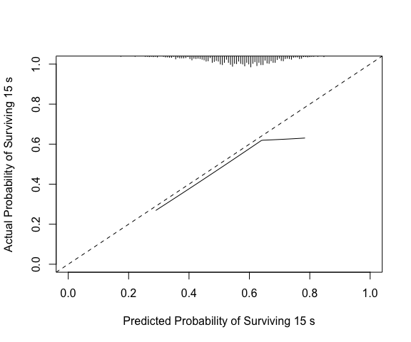

A clinical prediction model should produce well calibrated risk predictions, meaning the predicted probabilities should align with observed outcome rates. There are different levels at which calibration can be assessed (see https://pubmed.ncbi.nlm.nih.gov/26772608/); this package focuses on assessing “moderate” calibration via non-linear calibration curves. pmcalibration implements calibration curves for binary and (right censored) time-to-event outcomes and calculates metrics used to assess the correspondence between predicted and observed outcome probabilities (the ‘integrated calibration index’ or , aka , as well as , , and - see below).
A goal of pmcalibration is to implement a range of methods for estimating a smooth relationship between predicted and observed probabilities and to provide confidence intervals for calibration metrics (via bootstrapping or simulation based inference). Users are able to transform predicted risks before creating calibration curve (for example, logit transforming appears to improve performance when using a regression spline - https://doi.org/10.31219/osf.io/4n86q).
The examples below demonstrate usage of the package.
Binary outcome
# to install
install.packages("pmcalibration") # cran
# or
devtools::install_github("stephenrho/pmcalibration") # development
library(pmcalibration)
# simulate some data for vignette
set.seed(2345)
dat <- sim_dat(1000, a1 = -1, a3 = 1)
# show the first 3 columns (col 4 is the true linear predictor/LP)
head(dat[-4])
#> x1 x2 y
#> 1 -1.19142464 -0.9245914 0
#> 2 0.54930055 -1.0019698 0
#> 3 -0.06240514 1.5438665 1
#> 4 0.26544150 0.1632147 1
#> 5 -0.23459751 -1.2009388 0
#> 6 -0.99727160 -1.1899600 0We have data with a binary outcome, y, and two ‘predictor’ variables, x1 and x2. Suppose we have an existing model for predicting y from x1 and x2 that is as follows
To externally validate this model on this new data we need to calculate the predicted probabilities. We’ll also extract the observed outcomes.
First we can check weak calibration:
(lcal <- logistic_cal(y = y, p = p))
#> Logistic calibration intercept and slope:
#>
#> Estimate Std. Error z value Pr(>|z|) lower upper
#> Calibration Intercept -0.11 0.080 -1.38 0.17 -0.27 0.046
#> Calibration Slope 1.06 0.078 0.80 0.42 0.91 1.220
#>
#> z-value for calibration slope is relative to slope = 1.
#> lower and upper are the bounds of 95% profile confidence intervals.
#>
#> Likelihood ratio tests (a = intercept, b = slope):
#>
#> statistic df Pr(>Chi)
#> Weak calibration - H0: a = 0, b = 1 2.57 2 0.28
#> Calibration in the large - H0: a = 0 | b = 1 1.91 1 0.17
#> Calibration slope - H0: b = 1 | a 0.65 1 0.42The top part of the printed summary gives estimates of the calibration intercept and slope and their 95% CIs. The bottom part of the printed summary gives likelihood ratio tests (see Miller et al. 1993) assessing (1) weak calibration as a whole (the null hypothesis of intercept = 0 and slope = 1), (2) calibration in the large (H0: intercept = 0 given slope = 1), and (3) the calibration slope (H0: slope = 1). This output suggests the model the model is reasonably weakly calibrated: the calibration intercept and slope don’t clearly differ from 0 and 1, respectively.
We can use a calibration curve to assess ‘moderate’ calibration. Below we use pmcalibration to fit a flexible calibration curve, allowing for a non-linear relationship between predicted and actual probabilities.
In the example below, we fit a calibration curve using a restricted cubic spline with 5 knots (see ?rms::rcs). transf="logit" signals that the predicted risks should be logit transformed before fitting the calibration curve (this is the default for a binary y). pmcalibration calculates various metrics from the absolute difference between the predicted probability and the actual probability (as estimated by the calibration curve). In this case 95% confidence intervals for these metrics are calculated via simulation based inference (ci = "sim") with 1000 replicates. Alternatively we could have chosen bootstrap confidence intervals (ci = "boot").
(cc <- pmcalibration(y = y, p = p,
smooth = "rcs", nk = 5,
transf="logit",
ci = "sim",
n=1000))#> Calibration metrics based on a calibration curve estimated for a binary outcome via a restricted cubic spline (see ?rms::rcs) using logit transformed predicted probabilities.
#>
#> Estimate lower upper
#> Eavg 0.054 0.035 0.076
#> E50 0.059 0.031 0.079
#> E90 0.083 0.060 0.134
#> Emax 0.138 0.081 0.448
#> ECI 0.368 0.177 0.751
#>
#> 95% confidence intervals calculated via simulation based inference with 1000 replicates.The printed metrics can be interpreted as follows:
-
Eavgsuggests that the average difference between prediction and actual probability of the outcome is 0.054 (or 5%) with a 95% CI of [0.035, 0.076]. -
E50is the median difference between prediction and observed probability (inferred from calibration curve). 50% of differences are 0.059 or smaller. -
E90is the 90th percentile difference. 90% of differences are 0.083 or smaller. -
Emaxis the largest observed difference between predicted and observed probability. The model can be off by up to 0.14, with a broad confidence interval. -
ECIis the average squared difference between predicted and observed probabilities (multiplied by 100). See Van Hoorde et al. (2015).
pmcalibration produces a plot by default, as shown above. A more custom plot can be obtained via plot.
plot(cc, xlab="Predicted Risk of Outcome", ylab="Expected Proportion with Outcome", fillcol = "blue", ideallty = 0)
Or one could use get_curve to extract data for plotting with method of your choice.
pcc <- get_curve(cc)
head(pcc)
#> p p_c lower upper
#> 1 0.005804309 0.14402182 0.03580601 0.4538340
#> 2 0.015274021 0.11541021 0.04965833 0.2590454
#> 3 0.024743733 0.10296340 0.05610697 0.1868902
#> 4 0.034213445 0.09521032 0.05846271 0.1543373
#> 5 0.043683157 0.08985188 0.05926845 0.1357910
#> 6 0.053152869 0.08642764 0.05780335 0.1307891
# p = predicted risk (x-axis; this is not p provided to pmcalibration but is determined by eval)
# p_c = risk implied by calibration curve (y-axis)The model in its current form very slightly overestimates risk at low levels of predicted risk and then underestimates risk at predicted probabilities of over around 0.6.
The results above can be compared with rms::val.prob. Note that this uses lowess(p, y, iter=0) to fit a calibration curve. In this case lowess results in the curve extending beyond the possible range of risks, but the Emax, E90, and Eavg point estimates are consistent with those above.
library(rms)
#> Loading required package: Hmisc
#>
#> Attaching package: 'Hmisc'
#> The following objects are masked from 'package:base':
#>
#> format.pval, units
val.prob(p = p, y = y) |>
round(3)#> Dxy C (ROC) R2 D D:Chi-sq D:p U U:Chi-sq
#> 0.627 0.813 0.348 0.280 281.217 0.000 0.001 2.566
#> U:p Q Brier Intercept Slope Emax E90 Eavg
#> 0.277 0.280 0.148 -0.076 1.062 0.145 0.073 0.044
#> S:z S:p
#> -2.238 0.025Note also that the calibration intercept reported by rms::val.prob comes from the same logistic regression as that used to estimate the calibration slope. In logistic_cal the calibration intercept is estimated via a glm with logit transformed predicted probabilities included as an offset term (i.e., with slope fixed to 1 - see, e.g., Van Calster et al., 2016). The calibration slope is estimated via a separate glm. We can confirm this by accessing the corresponding estimates from the logistic_cal object.
Time to event outcome
The code below produces a calibration curve, and associated metrics, for a time-to-event outcome. The curve has to be constructed for predictions at a given time point, so an extra argument time should be specified. Here we use a restricted cubic spline with 5 knots to assess predictions at time = 15. In this case we use ci="boot" to get bootstrap confidence intervals for the metrics and curve (ci="sim" is currently unsupported for time-to-event outcomes). By default predicted risks are transformed via the complementary log-log transformation (function(x) log(-log(1 - x))) before estimating the calibration curve.
library(simsurv)
library(survival)
# simulate some data
n <- 2000
X <- data.frame(id = seq(n), x1 = rnorm(n), x2 = rnorm(n))
X$x3 <- X$x1*X$x2 # interaction
b <- c("x1" = -.2, "x2" = -.2, "x3" = .1)
d <- simsurv(dist = "weibull", lambdas = .01, gammas = 1.5, x = X, betas = b, seed = 246)
mean(d$eventtime)
#> [1] 19.60637
median(d$eventtime)
#> [1] 16.52855
mean(d$status) # no censoring
#> [1] 1
d <- cbind(d, X[,-1])
head(d)
#> id eventtime status x1 x2 x3
#> 1 1 12.749281 1 0.7534077 0.8486379 0.63937033
#> 2 2 24.840161 1 0.4614734 -2.1876625 -1.00954805
#> 3 3 9.087482 1 -0.6338945 -1.8948297 1.20112211
#> 4 4 24.811402 1 -1.0248165 0.6541197 -0.67035271
#> 5 5 19.072266 1 -0.1673414 -0.4625003 0.07739544
#> 6 6 13.595427 1 0.2376988 0.6452848 0.15338343
# split into development and validation
ddev <- d[1:1000, ]
dval <- d[1001:2000, ]
# fit a cox model
cph <- coxph(Surv(eventtime, status) ~ x1 + x2, data = ddev)
# predicted probability of event at time = 15
p = 1 - exp(-predict(cph, type="expected", newdata = data.frame(eventtime=15, status=1, x1=dval$x1, x2=dval$x2)))
y <- with(dval, Surv(eventtime, status))
# calibration curve at time = 15
(cc <- pmcalibration(y = y, p = p, smooth = "rcs", nk = 5,
ci = "boot", time = 15))
#> Calibration metrics based on a calibration curve estimated for a time-to-event outcome (time = 15) via a restricted cubic spline (see ?rms::rcs) using complementary log-log transformed predicted probabilities.
#>
#> Estimate lower upper
#> Eavg 0.051 0.028 0.080
#> E50 0.046 0.020 0.077
#> E90 0.077 0.052 0.126
#> Emax 0.245 0.115 0.407
#> ECI 0.349 0.146 0.813
#>
#> 95% confidence intervals calculated via bootstrap resampling with 1000 replicates.
mtext("time = 15")
Compare to rms::val.surv, which with the arguments specified below uses polspline::hare to fit a calibration curve. Note val.surv uses probability of surviving until time = u not probability of event occurring by time = u.
(vs <- val.surv(S = y, est.surv = 1-p, u=15,
fun = function(x) log(-log(x))))
#>
#> Validation of Predicted Survival at Time= 15 n= 1000 , events= 1000
#>
#> hare fit:
#>
#> dim A/D loglik AIC penalty
#> min max
#> 1 Add -3949.05 7905.02 148.71 Inf
#> 2 Add -3874.70 7763.22 60.48 148.71
#> 3 Add -3844.46 7709.64 32.04 60.48
#> 4 Del -3828.44 7684.51 7.10 32.04
#> 5 Add -3824.89 7684.32 0.00 7.10
#>
#> the present optimal number of dimensions is 5.
#> penalty(AIC) was 6.91, the default (BIC), would have been 6.91.
#>
#> dim1 dim2 beta SE Wald
#> Constant -2.6 0.25 -10.69
#> Time 26 -0.031 0.005 -6.27
#> Co-1 linear 0.063 0.26 0.24
#> Time 7.2 -0.15 0.028 -5.42
#> Co-1 -0.81 0.92 0.34 2.74
#>
#> Function used to transform predictions:
#> function (x) log(-log(x))
#>
#> Mean absolute error in predicted probabilities: 0.0352
#> 0.9 Quantile of absolute errors : 0.0760
plot(vs, lim=0:1)
We can make a plot that is easier to compare.
Internal validation
pmcalibration can be used to assess apparent calibration in a development sample or to externally validate an existing prediction model. For conducting internal validation (via bootstrap optimism or cross-validation) users are encouraged to look at https://stephenrho.github.io/pminternal/.